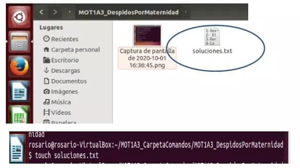

Módulo 0. Conociendo el ambiente de computación
Actividad 1 Computadora y sistema
Usuarios Linux
creación de un usuario en un sistema operativo Linux utilizando la interfaz gráfica

TREE
Evidencia con una impresión de pantalla de la ejecución del comando tree en la carpeta "T1A1_MujerMásImportanteEnMiHistoriaDeVida” .
PERMISOS
El archivo “T1A1_ExplicaciónPermisos.txt”. con la explicación de los permisos (tanto para usuarios, grupos y otros) tanto para archivos como para directorios
Una vez que cambiamos los permisos en una carpeta cambia la forma de su icono principalmente.Al modificar los permisos de lectura, escritura y ejecución en carpetas o directorios, es una forma de seguridad, ya que no podrá modificar nuestros archivos o abrirlos cualquier usuario o grupo compartido, solo aquellos usuarios o grupo que tenga habilitadas esos permisos.
Expedición por el mundo digital
INTERLAN
link para jugar interlanDRIVE
link de los documentos en driveLA COSOLA
-Las cinco capturas de pantalla de la interfaz gráfica, deberán corresponder a los comandos mkdir, touch, ls, cp, mv.
-Las dos capturas de pantalla de la consola deberán corresponder a los comandos history y grep
1- mkdir, creamos dos directorios.
2. touch se creó un archivo .txt
